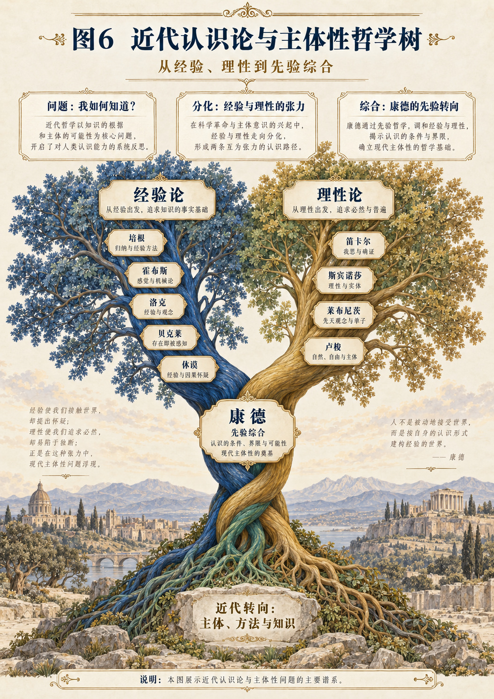

CHAPTER 36
第三十六章 培根：经验为什么需要组织而非堆积
让经验经过比较、组织与排除，而不只积累例子。
一 见得多，为什么仍然可能判断错
一个人做过许多项目，讲起案例头头是道，却未必能够解释某种做法究竟在什么条件下有效。成功的经历容易被记住，失败可能被归给偶然；与已有观点相合的细节被保留，不相合的细节则逐渐退出叙述。
培根节点不是简单要求“离开书本，去看事实”。它还要求检查，我们看到了哪些事实、以什么方式组织它们、何时过早形成了结论。经验如果只被收集来支持已有S，数量增加也可能只是使原有偏向更稳固。
从SDE看，经验并不是未经加工的原料直接进入心灵。选择、记录、分类、比较和命名都是D，工具、语言、习惯与共同知识都参与E。知识S怎样形成，必须把这些活动一起打开。
二 经验主义不等于等待事实自己说话
《新工具》批评过早从少量材料跃升到一般结论，讨论人类理解中的四类“偶像”，并以有组织的比较、排除和实验来推进对自然的解释。其方法并非简单枚举许多相似事例。[R36；P36]
因此，若把培根放在一个“D直接产生S、完全忽略E”的格子里，会过于粗糙。他对语言、个人习惯和既成体系的警惕，已经涉及知识发生的条件。与SDE比较时，应当保留这些内容，再问其组织方式与范围有什么差别。
本章的生成任务是：从三维互生结构出发，增加经验可检查、比较有组织、结论可修订等约束，看看怎样形成一条培根式的探究路线。它不要求我们接受原著中全部自然知识，也不把历史方法等同于今日实验规范。
三 第一项约束：把既有结论暂时降回待检验状态
设某人相信方法M能够产生结果Y。若每个新案例都被解释成M有效，那么M实际上没有进入研究，只是作为背景信念支配材料。第一步应当把它显露为一项具体主张S_M，列出它声称适用的范围。
随后追问：哪些观察支持它，哪些观察会使它需要修改？如果回答只有“任何失败都是没有真正使用M”，就必须说明“真正使用”的判据是否独立于成功结果。否则，结论已经被写进方法定义。
这一操作不是怀疑一切经验，而是改变经验与结论的关系。经验不再只是为S作证，而能使S重新进入D。知识因此从固定权威变成有历史的候选说明，其形成与修订都可以被追踪。
四 第二项约束：比较必须包含不出现的情形
假设某个结果出现时，我们总能看到条件A，于是怀疑A有重要作用。但还应问：A出现而结果不出现的情形有没有？结果出现而A缺席的情形有没有？如果不收集这些材料，解释容易把陪伴关系误当作必要或充分条件。
培根对存在、缺如与程度比较的组织，提供了这种研究方向的历史入口。[P36] 本书不把这些表格当作万能因果机器，而把它们理解为迫使观察越过成功故事的一种纪律。
在SDE中，比较改变D，也会改变E。原来只记录成功案例的资料库，需要加入失败、边界与操作细节。这样，下一次结论的形成条件才真正不同。仅在口头上说“欢迎反例”，却不保存反例材料，回写仍然没有发生。
五 一个有限模型：排除怎样减少候选解释
构造一个完全人为的系统，只有三个二值输入A、B、C，结果Y也只有零或一。我们规定八种输入组合都可测试，且每次结果确定不变。候选解释包括Y＝A、Y＝B、Y＝C，以及若干组合规则。
若完整记录显示，无论A与C怎样变化，Y都与B相同，那么在这个封闭模型中，Y＝B与全部八种情况一致，而其他不一致规则被排除。由于输入域只有八种，我们确实已经覆盖定义域，不只是抽到几个例子。
但把这个结果移到现实，必须重新检查：输入是否真的只有三个，记录是否可靠，结果是否稳定，未被观察的条件会不会改变规则。封闭模型中的穷尽，不等于开放世界中的穷尽。这正是形式证明与经验归纳之间需要保留的边界。
六 没有排除干净，并不等于剩下的那个必真
在现实研究中，候选解释通常由研究者提出，而不一定覆盖全部可能。如果A、B、C都被排除，也不能自动证明剩下的D为真，因为还可能存在从未进入清单的解释。
SDE可以把候选集本身看作一个需要发生的S。新的材料可能不仅改变候选的权重，还可能迫使我们形成新的变量、关系或问题。此时，D的任务不是继续在旧清单中选择，而是修改清单的构成方式。
这使培根节点与德勒兹节点形成一条有用连线：有组织的检验需要候选解释，问题的重构又可能扩大候选空间。两者不能互相替代。没有检验，创造容易漂浮；没有生成新问题的能力，检验可能永远围绕错误的选项。
七 四类偶像可以成为四种自检入口
《新工具》以种族、洞穴、市场和剧场等名称区分理解受到干扰的方式，涉及共同的人类倾向、个体经历、语言交往以及既成理论系统。[P36] 本书不把它们当作已经穷尽认知偏差的现代分类，而作为四种追问入口。
我是否因为喜欢秩序而把材料整理得过于整齐？是否把自己的少数经历当作所有人的尺度？是否因为一个词已经流行，就以为它对应一个清楚对象？是否因为体系宏大，就不再检查每一步的根据？
这些问题也针对SDE发生树。树形结构容易诱导我们看见整齐继承，三维术语容易诱导我们把所有问题放入同一模板。培根节点的作用，是让地图接受材料的阻力，而不是让材料总被整理成地图愿意看见的形状。
八 工具不是附属品，而是改变可见范围的条件
如果某种差别无法用现有记录方式保存，那么研究者可能反复遇见它，却无法将它纳入共同判断。改善工具不只是加快速度，也可能使此前混在一起的现象获得区分。
在本书的应用模型里，原来只保留最终答案的学习记录，可以增加解题过程与修改原因；原来只记录会议结论的协作档案，可以增加异议与未解决问题。新的记录方式E改变后续D，最终形成更可检查的S。
但工具也会选择性地显露。记录越多不等于越完整，指标越细不等于越接近问题。应当说明工具为何适合当前任务，以及哪些经验仍然可能被遗漏。工具进入发生，不意味着工具获得新的绝对权威。
九 从“有用”到“解释成立”仍有距离
某种做法在一次场景中有效，不代表我们关于它的解释已经正确。一个组织改变了会议形式后进展改善，原因可能在形式本身，也可能在任务变简单、成员更熟悉或其他同时变化的条件。
因此，实际效果是重要材料，却不能单独承担完整机制证明。SDE应当把结果S与产生结果的候选D、E分开检查。如果只看见效果便宣布理论全部成立，实践就被误用为替理论免检的印章。
反过来，解释暂时不完整也不意味着不能谨慎行动。可以在明确范围内采用一个有支持的做法，同时继续记录其条件与局限。行动的可用性与理论的完备性可以处在不同阶段，不必相互冒充。
十 一个课堂场景：新方法是否真的改善了学习
构拟一位教师采用新的讨论方式后，发现课堂更热闹，于是判断学习明显改善。这里首先要问，热闹S与学习能力S是否相同。若目标是形成解释能力，就需要观察学生是否能够处理新的案例，而不仅是发言次数增加。
接着检查D：学生是在彼此回应，还是轮流复述同一答案？再检查E：材料难度、任务要求和教师提示是否同时改变？这些信息决定我们能够提出什么范围的解释，而不是靠一种总体印象结束评估。
可以先设计小规模的比较记录，保留新旧任务中的推理过程与错误类型。这里不把构拟场景当作真实实验结果，也不声称某种课堂方式必然有效。哲学节点提供的是研究结构：让“我觉得更好”变成可以继续追问的材料。
十一 一个写作场景：不能只收集支持母题的哲学家
本书自身就是一个适合应用培根节点的场景。若只寻找那些容易翻译成S、D、E的段落，就可能形成一个看似处处成功的发生树。那些难以映射的概念若被悄悄删去，成功便失去意义。
因此，每个节点应记录不吻合部分。怀特海的永恒客体、康德的先验条件、弗雷格的客观思想等，不能仅凭改名收入E就算解释完成。应当说明新模型保留了什么，暂时没有推出什么，以及增加哪些约束才可能继续。
这种记录会使树不那么整齐，却使其成为真正的研究材料。失败并不是装饰性的谦虚，而是下一轮方法修订的输入。没有可保存的失败，所谓持续生成就可能只是持续确认。
十二 三方程怎样在探究中闭合
一次探究可以从材料E经过比较与操作D，形成候选说明S。但这只是局部主路径。候选说明又会决定下一轮要寻找什么案例、改变什么条件，因此S参与组织新的D；试验结果与过程记录则回写E。
用三式表达，需要保留时间与任务索引。当前假说不是未来结果，当前资料库也不是世界全部条件。H应说明哪些记录进入后续，哪些材料被排除以及为什么，而不能把所有未知都藏在一个更新符号中。
这样，探究循环才有可检查的记忆。每轮不仅增加结论，还改变提出问题的能力。培根式方向在SDE中可以被重构为一种有组织的经验回写，但这不意味着三方程已经替代了具体实验设计与证据评价。
十三 六路径中的反向工作
从S→D→E进入，适合检查一个既有结论怎样形成：它依据哪些案例，采用什么比较，遗漏了什么条件。从E→D→S进入，则适合在新材料中尝试形成说明。二者在研究中可以交替。
D→E→S也有价值：一种新记录工具或新操作方式，可能先改变资料的可见范围，再形成新的问题和结论。这里的方法并非等待一个完美假说出现才开始活动，而允许技术与观察方式参与问题发生。
但六路径不是六套自动有效的实验程序。每次转换仍需要说明目的、材料与判断规则。排列提供入口，不能提供全部证据。把这一点保留，才不会用组合完备的外观替代研究工作的具体困难。
十四 经验的共同性怎样形成
一个人的经验若不能被说明、记录或再次检查，其他人很难判断应当继承什么。共同知识需要一种可传递的结构，但传递又不等于把经验压成没有处境的结论。
因此，书稿、课堂或数据库应尽量保留结论的适用条件与形成过程。读者不仅看到“这样做有效”，还应看到对什么任务、在什么材料下、通过何种比较得出这个判断。这样的S进入后继E，才不容易变成僵化规则。
这也是本书为动态树保留原典入口的原因。节点卡只能帮助导航，不能代替材料本身。一个能被点击回到证据的知识系统，比一个只会重复整齐摘要的系统，更有可能接受真正的回写。
十五 这个节点的挂接方式
培根挂在E的经验组织支脉，并深度连接D的比较、排除与操作，以及S的候选知识。他不是“没有理论，只看事实”的象征，也不是一条从观察直达真理的捷径。
人生入口是“我是否只在重复成功故事”，研究入口是“什么材料会迫使我改变解释”。反向检查则是“我有没有把暂时可用当作最终证明，或把尚未解释当作完全无用”。这些区分使经验能够既支持行动，又继续修订自身。
阅读可从《新工具》第一卷的偶像论与第二卷的比较、排除方法进入，留意原文与后世编者注释的区别。有限二值模型、课堂场景和本书自检均为本章构造，不作为培根本人已有现代方法的证据。[R36；P36]
留给读者的问题 新增的观察是否可能改变判断，而不只是继续支持旧判断？